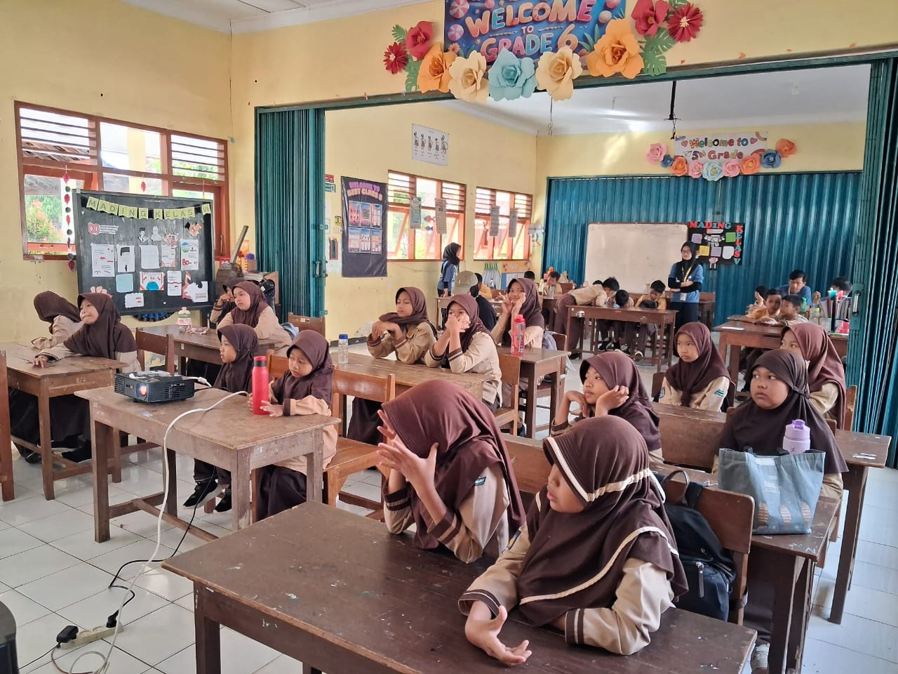
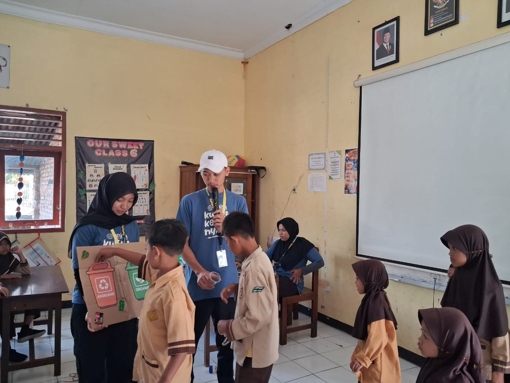
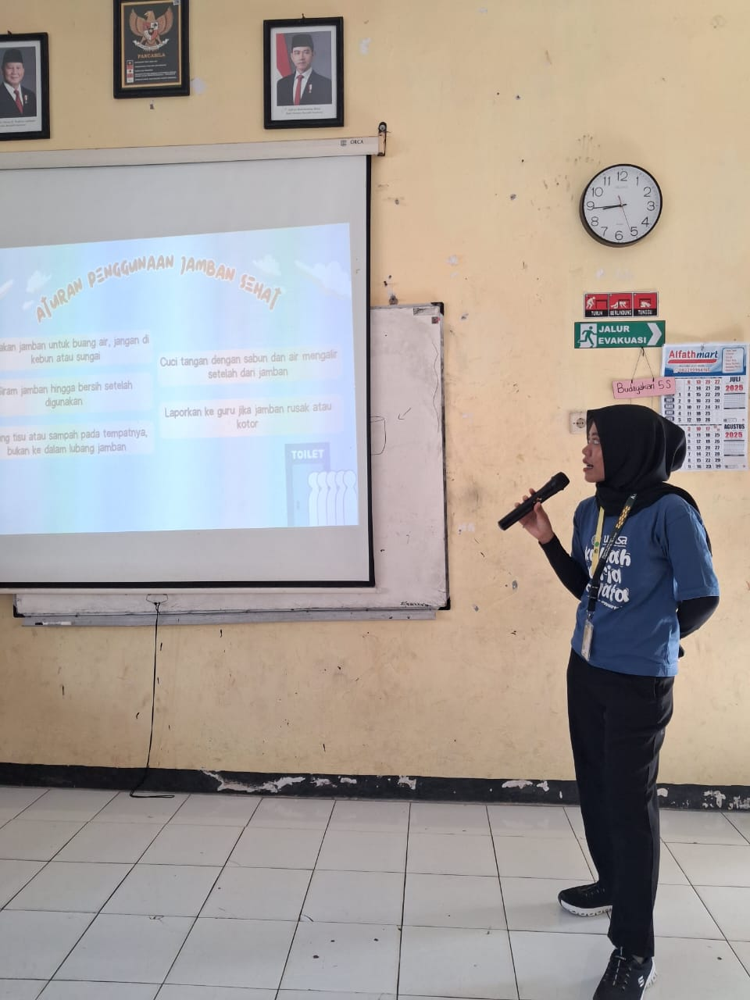

Edukasi PHBS di SD Negeri Siyono III: Pentingnya Cuci Tangan, Pilah Sampah, hingga Pentingnya Jamban Sehat
Gunungkidul – Upaya menanamkan perilaku hidup bersih dan sehat sejak dini kembali dilakukan Tim Kuliah Kerja Nyata (KKN) bersama siswa/i SD Negeri Siyono III. Melalui kegiatan bertajuk Edukasi PHBS, anak-anak diajak memahami tiga kebiasaan penting dalam kehidupan sehari-hari, yakni mencuci tangan dengan benar, memilah sampah secara tepat, serta menggunakan jamban sehat.
Dalam kegiatan ini, anak-anak diajak belajar tiga topik utama, yaitu pentingnya mencuci tangan dengan benar, memilah sampah secara tepat, serta penggunaan jamban sehat. Semua materi disampaikan dengan metode interaktif, menggunakan permainan, nyanyian, dan praktik langsung, sehingga anak-anak tidak hanya mendengar teori, tetapi juga terlibat aktif.
Cuci Tangan dengan Lagu: Belajar Sambil Bernyanyi
Materi pertama dimulai dengan edukasi mencuci tangan. Tim KKN menjelaskan bahwa tangan adalah bagian tubuh yang paling sering bersentuhan dengan benda-benda sekitar, sehingga rawan menjadi sarang kuman. Mencuci tangan bukan sekadar kegiatan sederhana, melainkan langkah utama untuk mencegah berbagai penyakit.
Agar lebih mudah dipahami, langkah-langkah cuci tangan dikenalkan melalui nyanyian. Anak-anak diajak menyanyikan lagu yang berisi urutan cara mencuci tangan, mulai dari menggosok telapak tangan, punggung tangan, hingga sela-sela jari. Kelas pun mendadak riuh oleh tawa dan semangat mereka.
Setelah itu, siswa langsung praktik mencuci tangan dengan sabun dan air mengalir. Mereka tampak antusias mencoba satu per satu gerakan. Beberapa anak bahkan saling mengingatkan jika ada temannya yang melewatkan langkah tertentu. Guru pendamping yang ikut menyaksikan mengatakan bahwa metode ini lebih efektif dibandingkan hanya memberikan ceramah.
Pilah Sampah dengan Metode 3R: Belajar Peduli Lingkungan
Materi kedua berlanjut ke pemilahan sampah yang tepat. Tim KKN menjelaskan konsep 3R (Reduce, Reuse, Recycle), yang menjadi kunci untuk menjaga lingkungan tetap bersih dan sehat. Anak-anak dikenalkan perbedaan sampah organik, anorganik, dan B3 (Bahan Berbahaya dan Beracun), lengkap dengan contoh nyata dalam kehidupan sehari-hari.
Untuk membuat kegiatan lebih menarik, digunakan kertas bergambar sampah. Anak-anak diminta memilah gambar tersebut dan memasukkannya ke ilustrasi tempat sampah sesuai kategorinya. Ketika ada yang salah menempatkan, teman-temannya langsung tertawa sambil memberi tahu jawaban yang benar. Suasana pun berubah menjadi semacam permainan kompetisi yang penuh keceriaan.
Meski sederhana, kegiatan ini berhasil menumbuhkan kesadaran anak-anak tentang pentingnya membuang sampah pada tempatnya dan menjaga kebersihan lingkungan. Beberapa siswa bahkan spontan bercerita bahwa mereka ingin mulai memilah sampah di rumah.
Pentingnya Jamban Sehat: Belajar Menjaga Kebersihan Diri
Materi terakhir membahas penggunaan jamban sehat. Anak-anak diajak memahami mengapa buang air besar sembarangan bisa membahayakan kesehatan serta mencemari lingkungan. Tim KKN menjelaskan pentingnya menggunakan jamban yang bersih, cara membilas dengan air mengalir, serta bagaimana menjaga jamban agar tetap wangi dan tidak menjadi sarang penyakit.
Diskusi berlangsung interaktif. Ada siswa yang bertanya, “Kenapa harus pakai air banyak saat membilas?” Ada juga yang penasaran bagaimana cara membersihkan jamban agar tetap nyaman dipakai bersama-sama. Pertanyaan-pertanyaan itu menunjukkan bahwa mereka mulai peduli terhadap hal-hal kecil yang sebelumnya mungkin dianggap sepele.
Guru pendamping turut menegaskan bahwa sekolah sudah berupaya menyediakan jamban sehat bagi siswa, namun yang terpenting adalah bagaimana anak-anak bisa menjaga kebersihan fasilitas tersebut dengan baik.Rangkaian edukasi PHBS di SD Negeri Siyono III ini berjalan dengan lancar, interaktif, dan menyenangkan. Dengan kombinasi antara materi, lagu, permainan, dan praktik langsung, anak-anak tidak merasa digurui. Sebaliknya, mereka justru terlihat sangat aktif, berani bertanya, dan tidak malu untuk mencoba.
Kegiatan ini membuktikan bahwa edukasi kesehatan bisa disampaikan dengan cara sederhana namun berdampak besar. Jika kebiasaan mencuci tangan, memilah sampah, dan menggunakan jamban sehat bisa ditanamkan sejak dini, maka besar kemungkinan anak-anak akan terbiasa membawa perilaku positif ini ke dalam kehidupan sehari-hari di rumah maupun lingkungan sekitar.
Bagi Tim KKN, kegiatan ini juga menjadi pengalaman berharga. Tidak hanya memberikan ilmu, tetapi juga melihat langsung bagaimana anak-anak belajar sambil bermain. Harapannya, edukasi ini menjadi awal dari pembiasaan hidup bersih yang berkelanjutan, sehingga mencetak generasi yang lebih sehat dan peduli lingkungan di masa depan.